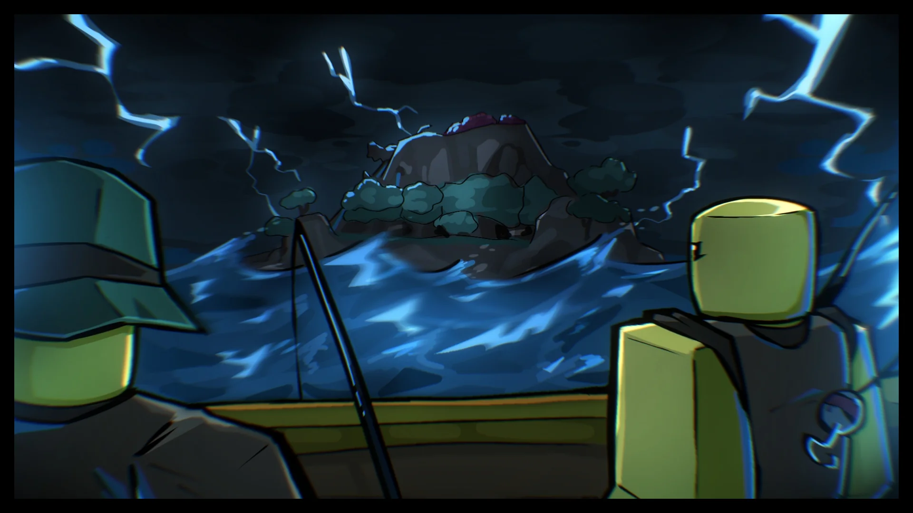
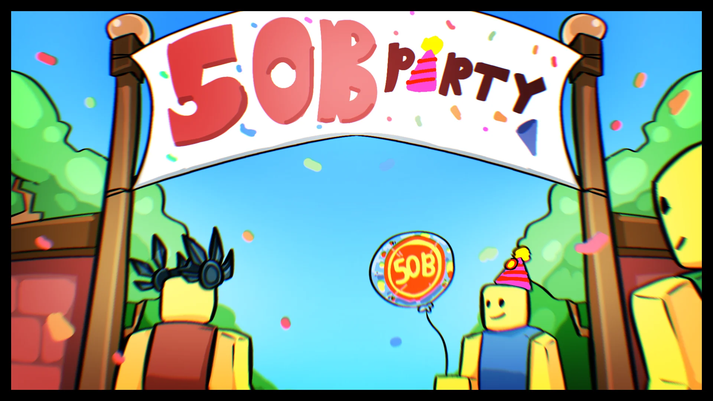
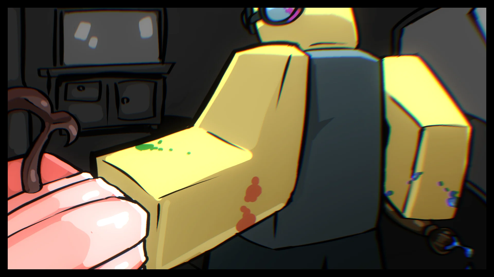

The Blox Bulletin
Météo Bipolaire, Programme des Mises à Jour, et Plus de Skins de Fruits !
D'Étranges Tempêtes Agitent les Mers...

Plus tôt cette semaine, quelques pêcheurs près d'Hydra Island ont signalé quelque chose d'inhabituel. Le ciel était dégagé un instant, et dans l'instant suivant, un gigantesque éclair d'électricité a déchiré le ciel.
Dans les villes voisines, des chocs statiques ont surcouru l'air. Des foules entières ont rapporté que leurs cheveux se dressaient d'eux-mêmes. De plus, un bourdonnement sinistre et grandissant pouvait être entendu depuis les cieux, comme si une autre frappe allait apparaître à tout moment.
Personne ne sait ce qui se cache derrière ces perturbations atmosphériques soudaines, mais ce n'est pas un schéma météorologique ordinaire. Quelque chose est en train de se charger... et ce n'est que le début.
Les Mises à Jour Estivales de Blox Fruits — Ce qui Vous Attend !
Par l'Équipe de Développement
Salut tout le monde ! À l'approche de l'Expansion Estivale, nous fournissons un bref aperçu de la façon dont les prochaines mises à jour vont être déployées, en commençant dans les semaines à venir.
Pour rappel, plutôt qu'un seul énorme déploiement, cette expansion est construite comme une série de mises à jour continues, avec chaque semaine apportant quelque chose de nouveau que TOUS les joueurs peuvent apprécier, quel que soit leur niveau.
Le lancement de ces mises à jour inclura un rework majeur de fruit, un nouveau cap de niveau, la 3ème île de mer, le Système de Pêche, le Rework de l'Inventaire, l'Événement Estival, et d'autres choses... dans la seule PREMIÈRE mise à jour.
Dans l'une des mises à jour, nous lancerons également le début de l'Événement de Célébration des 50 Milliards, une célébration à durée limitée pour le jalon que vous avez tous aidé le jeu à atteindre.
Dans le cadre de la célébration des 50 milliards, les joueurs pourront infiltrer la base de l'Armée Rouge, gagnant des Médaillons Oni à travers des activités spéciales. Ensuite, votre attention doit se tourner vers le domaine de la Famille Rip, où des Fragments Célestes attendent d'être découverts par ceux qui défient les forces d'Indra. Ces deux monnaies peuvent être échangées contre des cosmétiques et récompenses exclusifs à durée limitée !
Place aux Fruits Colorés cet Été !
Par l'Équipe Admin
Cet été, de nouveaux skins de fruits débarquent dans Blox Fruits ! Dites bonjour aux fruits colorés, où vos nouvelles puissances acquises s'accompagnent de style.
Avec chaque nouveau rework de fruit sorti dans l'Expansion Estivale, un événement spécial sera ajouté en parallèle, centré autour du fruit nouvellement mis à jour. Complétez les défis à durée limitée pour gagner un spin gratuit au Gacha NPC de l'Été !
Chaque spin au NPC accordera une chance d'obtenir des prix précieux, comme des skins exclusifs pour les fruits nouvellement reworkés !
Chaque événement ne sera disponible que pour une courte période avant que le suivant n'arrive, alors assurez-vous de faire valoir chaque spin pendant que vous le pouvez !
 Discord
Discord
 TikTok
TikTok
 Youtube
Youtube